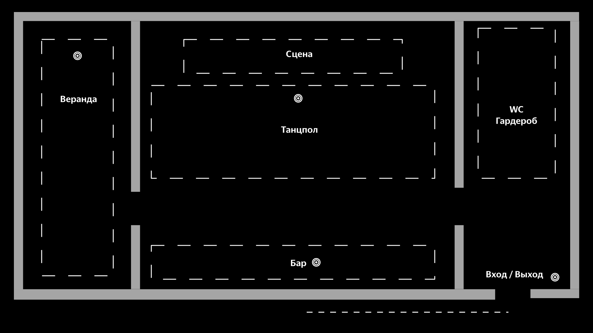

Вне зоны BLE маяков
BLE вход/выход
BLE бар (Бери Заряд)
BLE танцпол
BLE веранда
Группы посетителей для рекомендательной модели (список "uid")
Определены по силе RSSI сигнала BLE-маяков в клубе, показаны первые 50 пользователей.